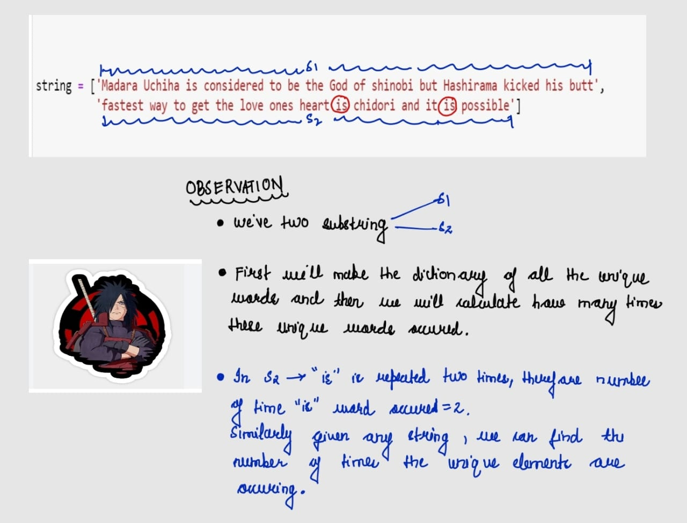
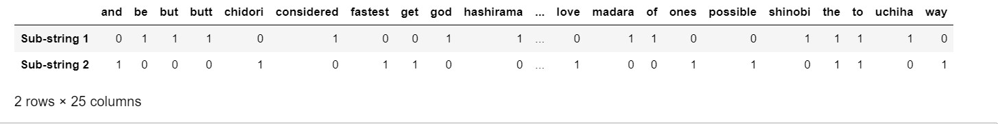

Question: What the heck is bag of words and why should I read this concept as a Data scientist?
Answer: What if I say data science is all about converting the data into mathematical equation and solving it. And now the question is how do we convert the data into math. It will be very confusing if you not aware about the domain of data science in depth. So in this blog I will convince you guys why BOW is important and how we connecting mathematics logic with the data.
Let’s start 😊----------------->
Question: What is BOW?
Answer: According to Wikipedia : The bag-of-words model is a simplifying representation used in natural language processing and information retrieval (IR). In this model, a text (such as a sentence or a document) is represented as the bag (multiset) of its words, disregarding grammar and even word order but keeping multiplicity. The bag-of-words model has also been used for computer vision.
Now scores of 1,2 are considered to be negative reviews and scores of 4,5 are considered to be the positive reviews and we will consider score of 3 as neither positive nor negative which logically makes sense. This is an approximate and a proxy way of determining the polarity of the reviews.
Important note: In order to solve real world problems, we have the data and to use mathematical knowledge on that data we need to convert that data into vectors, now vectors enable us to use mathematical concepts and bag of words is one of the techniques to convert data into vector format. I hope now most of us understood why mathematics is crucial for building machine learning models. If you don’t know math then it’s obvious that you don’t know what’s happening behind the bush and we will learn how to convert data into vector form using Bag of words from scratch.
Before moving ahead we should be clear that this technique is mostly used to convert text data into vectors. Now if we all think in which all domain text data is present then we can find tons and tons of examples.
1. Google news: When you read a news on google news, what you see is texts and as a data scientist your question should that how are we finding out which news is important and coming at top in our search results and yes behind the hood complex mathematical concepts are being used to build these systems.
2. Amazon product reviews: How are we able to which are the top positive comments or top negatice comments on amazon and yes here also maths is being used.
3. Email spam classification: How gmail or any mail is able to distinguish between spam or not spam mails, here we use maths.
Note: We all aware of various machine learning algotithms like KNN,linear regression.logistic regression, SVN and all. Can these algorithms be able to work if give text data or any data directly into these?
No, we need to convert the data text data into vector format so that these algorithms can work.
Understanding the intuition of Bag of words:
Example: In the below example we have list which consists of two sub strings and we will create vocab of this using our custom made function, vocab is like set of all the unique words in our list.
string = ['Madara Uchiha is considered to be the God of shinobi but Hashirama kicked his butt',
'fastest way to get the love ones heart is chidori and it is possible']

Step 1: Creating the dictionary of all the unique words in our list :
def creating_dict_unique(string):
words_unique = set() # here we are using set
for i in string:
for j in i.split(" "):
if len(j) < 2:
continue
words_unique.add(j)
# sorting the unique words and converting them into list again
sorted_unique_words = sorted(list(words_unique))
# returning the dict of sorted words alog with their index:
ans = dict()
for i,j in enumerate(sorted_unique_words):
ans[j] = i
return ans
print("-"*100)
print(creating_dict_unique(string))
print("-"*100)
a1=creating_dict_unique(string)
output:
----------------------------------------------------------------------------------------------------
{'God': 0, 'Hashirama': 1, 'Madara': 2, 'Uchiha': 3, 'and': 4, 'be': 5, 'but': 6,
'butt': 7, 'chidori': 8, 'considered': 9, 'fastest': 10, 'get': 11, 'heart': 12,
'his': 13, 'is': 14, 'it': 15, 'kicked': 16, 'love': 17, 'of': 18, 'ones': 19,
'possible': 20, 'shinobi': 21, 'the': 22, 'to': 23, 'way': 24}
----------------------------------------------------------------------------------------------------
Step 2: Creating a Custom BOW:
from collections import Counter
from scipy.sparse import csr_matrix
def count_unique_words(string,vocab):
# step 1: Creating the dimensions of each words
total_rows = list()
total_columns = list()
times_word_occured = list()
# step 2: Checkinh whether our string is list or not
if isinstance(string,(list,)):
for index, rows in enumerate(tqdm(string)):
# step 3: now we will count the freq of each word in substring using Counter
freq_words = dict(Counter(rows.split()))
# taking care of edge case: if length of word 0 or 1 then we continuing
for ele, no_count in freq_words.items():
if len(ele) < 2:
continue
# taking care of edge case: what if word is not present in our vocab then in that case we are returning -1
word_not_vocab = vocab.get(ele,-1)
# step 4: If the word exist in our vocab then we will store index of string in total_rows and index of vocan in col
if word_not_vocab != -1:
#storing the index of word of the substring
total_rows.append(index)
#storing the index where that word present in our vocab
total_columns.append(word_not_vocab)
#storing how many times that word occured in our string
times_word_occured.append(no_count)
# step 5: Making csr matrix cause we convering our matrix into sparse matric
sparse_matrix = csr_matrix((times_word_occured, (total_rows,total_columns)), shape=(len(string),len(vocab)))
return sparse_matrix
pass
else:
return "Please pass a list of strings"
The following is the output of our custom Bag of words:

Comparing our customer implementation with Sklearn countvectorizer:
from sklearn.feature_extraction.text import CountVectorizer
vec = CountVectorizer(analyzer='word')
vec.fit(string)
using_sklearn = vec.transform(string)
df_bow_sklearn = pd.DataFrame(using_sklearn.toarray(),columns=vec.get_feature_names(),index = ['Sub-string 1','Sub-string 2'])
df_bow_sklearn.head()
The following is the output of Sklearn

CONCLUSION :
The Bag of words output is same as the Sklearn output.
DRAWBACKS OF BAG OF WORDS:
1. It don’t consider the sementic meaning of words.
2. We need to create vocab very carefully.
But there many other state of the art techniques which are used in NLP like word2vec and all.